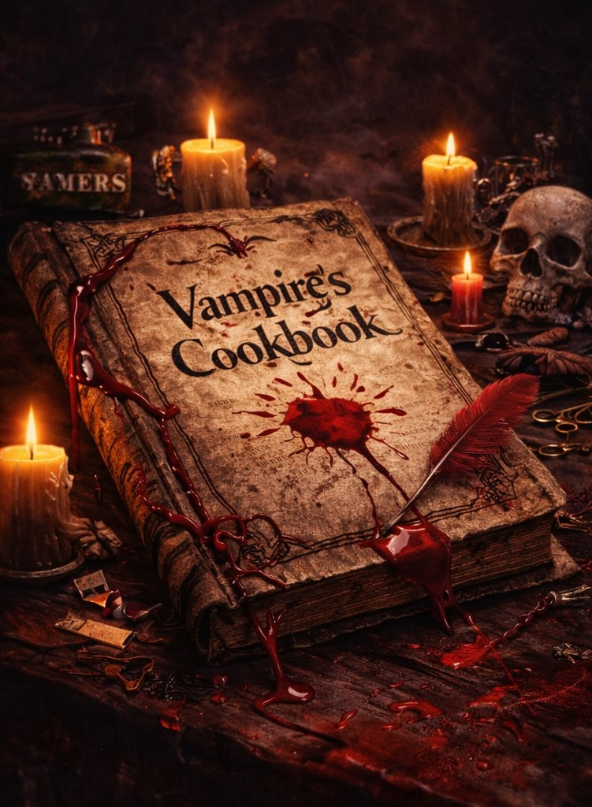
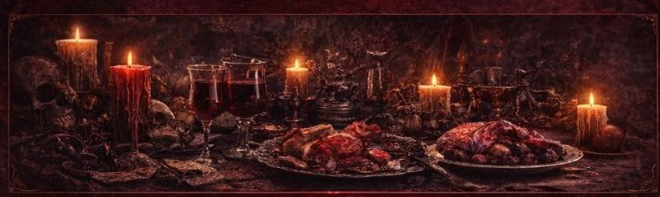

Welcome to the Vampire Cookbook.
Here you will learn about blood types and the best flavors for each type.
In this book, you will find recipes that mix flavor and mystery. Each blood
type has a special taste, and this cookbook will show you how to use it
in your meals.
The Vampire's Cookbook pairs blood types with specific flavors for fine dining. Type O is bold with smoked meats. Type A is delicate with fresh herbs. Type B balances sweet and bitter with dark chocolate. Type AB is rare and experimental with champagne. It turns feeding into an art form for immortal connoisseurs.

About this cookbook:
This book shows the best flavors for each blood type.
It is easy to follow and fun to use.Perfect for those who like a little magic and mystery in the kitchen.The Vampire's Cookbook is a creative concept that reimagines vampires not just as predators, but as culinary connoisseurs who appreciate the subtle flavors of different blood types. Just as humans pair wine with food, vampire chefs pair blood types with specific ingredients to create exquisite dining experiences. This cookbook transforms the act of feeding into an art form, complete with serving temperatures, glassware recommendations, and even considerations of the donor's diet and emotions—similar to wine's terroir.

This cookbook helps you create simple and tasty meals. Each recipe shows what works best for each blood type. Have fun cooking and enjoy your food! Try the recipes and see which flavor fits best for each type. Explore the world of vampire cooking with this unique cookbook. Every recipe combines flavors and blood types to create delicious and unusual meals.